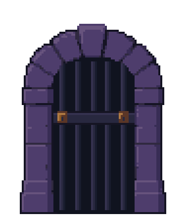

STAGE 05 COMPLETE / REVIEW CANDIDATE / STOPPED BEFORE STAGE 06
The central dungeon gate
A new PixelLab source, cleaned in LibreSprite into an intact stone arch, a dark indigo gate leaf and two bronze fittings. All approved wall, recess, floor-top and fascia art stays unchanged.
Stage report · Measured checks · Approved Stage 04 · Draft PR #203
Actual Unity preview
The doorway retains the existing center x224 and meets the unchanged y180 floor. Cyan bars show three temporary actor-width footprints; they are absent from the saved scene.
Full native Game View · Actual 1080x1920 capture · Markers removed
Raw source, cleanup and separate layers
PixelLab received the actual native Rattlebones sprite for rendering discipline, with palette copying disabled. LibreSprite retains the curved crown, cleans stone/iron clusters and extends only the straight lower sections by twelve authored pixel rows. No scaling or interpolation.
Immutable raw source · Generation receipt
Native editable kit
Three registered 96x112 layers. Occupied assembly: 74x96 pixels, 12 combined colors, binary alpha, complete outline with canvas padding.
One coherent arch, one gate leaf and separate hardware; no tiny arch fragments or additional props.

4x nearest-neighbor review.Verified and stopped
Unity test: 1 passed, 0 failed. Required Unity validator passed. Native cels equal independent PNG exports. Six actual Unity captures match the expected native pixels exactly. All 126 protected art files and 135 prior placements remain unchanged.
One paid job: 6 generation equivalents; cumulative 19/35. Account balance 1035.20. No Stage 06, props, production integration or merge. This isolated scene is an art preview, not phone-build verification.